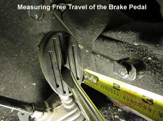
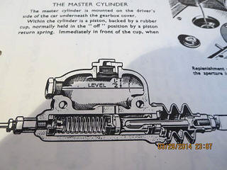
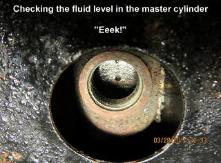

|
|
|
|
|
|
|
|
|
|
|
|
|
|
|
|
|
|
|
|
|
|
(as appeared in the Spring, 2014 TSR)
By Charlie Adams
This article is a reminder to check your brakes early this season. We don’t want to let time get away from us in this critical area. Here are the areas where I make a pre-season check:
- Pedal free travel
- The master cylinder fluid level
- Brake pedal firmness
- Hand brake operation.
Pedal Free Travel
Pedal free travel is very easy to check and begins to suggest to me the maintenance level of my brake system. This check takes less than a minute. When I have found incorrect free travel, I’ve often found brake problems elsewhere.
There should be about ½ inch of free travel at the beginning of the pedal stroke. This free travel occurs before the master cylinder piston begins to move. Once the free travel distance is set, it usually requires no further adjustment. If the free travel is too long, the brake pedal firms up lower than it should. If too little, the by-pass port of the master cylinder may be covered leading to brake shoe drag.
I test free travel by hand so I can better observe distance. I measure the distance from the pedal at rest to the point of first resistance, keeping in mind there is a little resistance at the top caused by the pedal return spring. The resistance I’m looking for occurs when the push rod contacts the outer base of the master cylinder piston.
As I was writing this article, I checked the free travel on my TD and found it incorrect. The distance was at least one inch, twice the correct distance. I also noted the pedal had a little looseness at the top and from left to right, so I’m thinking the pedal arm bushings need replaced and will check the return spring.
Pedal free travel is adjusted at the back of the master cylinder where the piston rod enters the cylinder. The adjustment is not difficult, but it must be done under the car.
Master Cylinder Check
On a TD or TF, the master cylinder is full when the fluid level is about ½ inch below the bottom of the filler neck, as shown in the workshop manual.
The standard for the TA, TB and TC is to have the fluid level about an inch from the filler neck.
I tend to overfill my master cylinder a bit; but I keep in mind the fluid should be well short of the filler neck. Space is needed for the brake fluid to expand as the temperature goes up. When I checked my TD master cylinder this morning it was empty as I suspected.
Several months ago as I inspected the car before I bought it, I’d seen the evidence of the leak. I had noted the frame paint had bubbled around the master cylinder area. Now, with the outdoor temperature rising, my garage is warm enough for work and I’ll remove the master cylinder for inspection and later locate the leak.
When I find my brake fluid level below the expected height, I look for signs of leaks, adjust the brakes, and recheck the fluid level in the master cylinder.
Pedal Firmness
My guide phrase for pedal firmness is “solid resistance.” I prefer my brake pedal to become firm no lower than about half way to the floor. Consider the total travel distance of the brake arm to the floor, less the ½ inch of free play, is about 7 inches. When my brake pedal firms up lower than expected, I want to find out why. My quick test for the correctness of the rear brake adjustment is to partially apply the hand brake and then step on the brake pedal to see if the pedal firms at a higher level.
If I find my brake pedal exhibits a soft or spongy feel, or requires pumping, I investigate. Often, I’ve found a soft brake pedal has been caused by air in the brake fluid and corrected it by bleeding the brakes. I’ll also look for leaks around the cylinders.
I usually drive with such care these days, especially with my wife in the car, that even when going fast I don’t test the capability of the brake system on the road. Now and then I remind myself these cars perform well when pushed to the limits. This leads me to occasionally test my brake system performance at a large parking lot where there is ample room for safety.
I want to satisfy myself my brakes have the power to quickly bring the car to a stop far faster than under normal conditions. I’ve also enjoyed finding how fast my cars will stop, and keep in mind a well-functioning MG brake system will allow me to lock up the wheels. I first test the handbrake. Before doing so I ask myself, “how long has it been since the handbrake cable was renewed?” What is the condition of the cables?
I want my handbrake to be sufficient to enable me to stop the car in the event of a hydraulic brake system failure. The handbrake has got to be more than a hill holder even though the rear shoes provide far less power than the footbrakes. Whenever I’ve tested my handbrake, I’m reminded of how slowly it will stop the car.
After checking the handbrake, I apply the brakes with increasing pedal pressure to test whether the car is capable of stopping quickly and straight.
- If I have a spongy feeling pedal or get a rising pedal when it is pumped, I’m thinking there is air or water in the brake fluid and will look for leaks and bleed the system. It’s also possible the master cylinder cups are worn.
- If the brakes don’t produce a powerful stop, the rear brakes may not be fully applied, the brake linings may be greasy, or the brakes may not have been “bedded.”
- If the brakes drag, chances are it’s the shoe adjustments. Other possibilities include the handbrake adjustment, an overfilled master cylinder, limited pedal free play, seized wheel cylinder, weak return springs on the shoes or pedal, or a plugged master cylinder port.
- If the brakes pull to one side, I’ll look at the front drums, shoes and wheel cylinders.
Further Inspection and More
If it has been 10 years or more since a brake system has been rebuilt, I’m thinking it’s again time for this maintenance. I also just asked myself, “How long have the brake lines been on the car?” Steel brake lines rust from the inside, so I may replace them as well. Next time, I’ll have notes about what I’ve done with my brake system. Meanwhile, I’d appreciate hearing from you if you have comments or questions. Have a great spring driving season this year. I hope your car runs like a top!